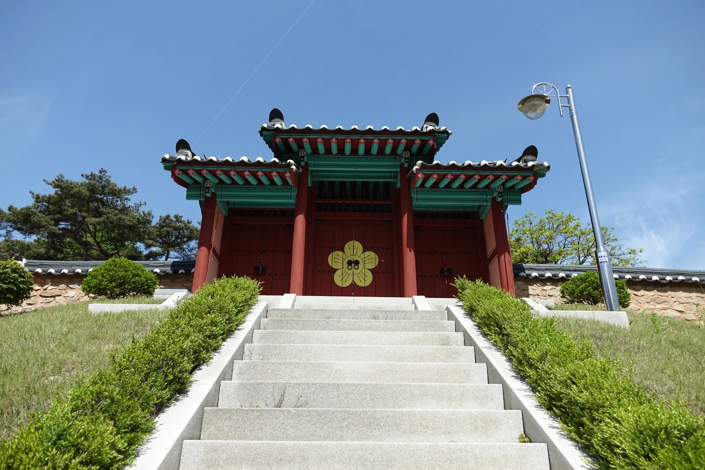
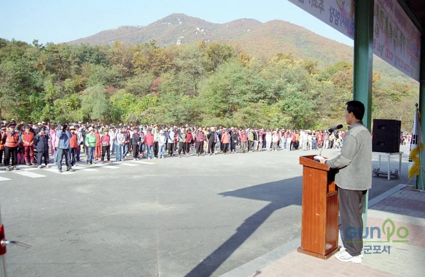
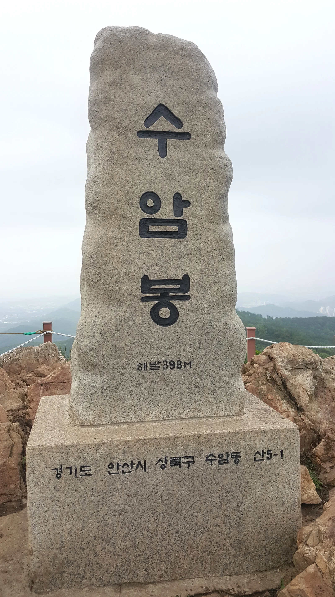
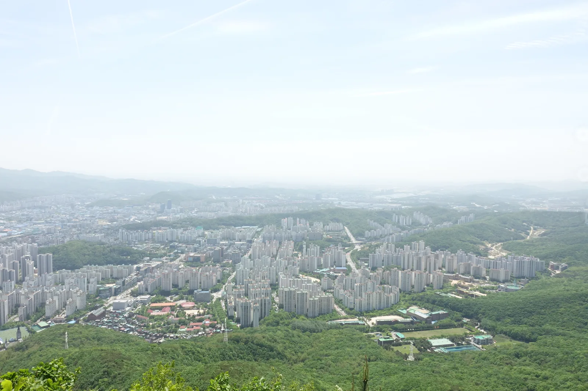
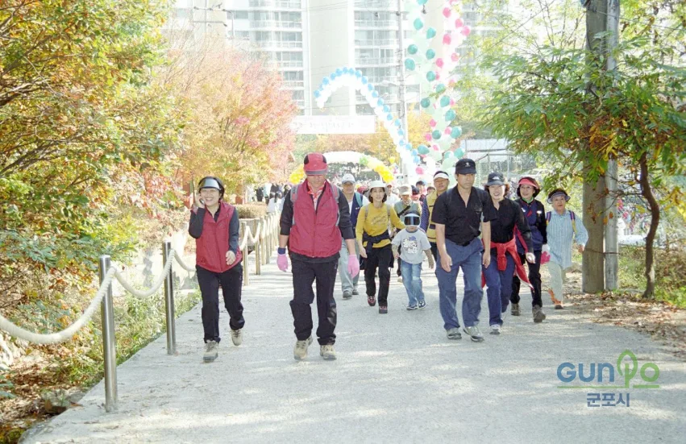

▲ 수리산 자락에 단풍이 든 가운데 시민들이 산책로를 걷고 있다(자료사진). 안양·군포 일대에서는 해마다 가을 단풍철에 맞춰 걷기 축제가 열려 왔다 ⓒ 군포시
경기 안양시 만안구, 수리산 자락 옛 채석장 터에 조성된 병목안시민공원 일대에서 매년 가을 병목안 가을단풍축제가 열린다. 안양9동이 주최하는 이 축제는 '주민이 주인공이 되는 축제'를 표방하며 매년 10월 말~11월 초 사이 열려 왔다. 2026년 정확한 개최일은 이 기사 작성 시점(2026년 9월)까지 공식 발표되지 않았으며, 직전 해인 2025년에는 11월 1일 열렸다. 병목안시민공원은 국내 최대 규모 인공폭포를 품고 있고, 뒤로는 태을봉·슬기봉·수암봉으로 이어지는 수리산도립공원 등산로가 펼쳐진다. 이 기사는 공원과 도립공원의 특징, 축제 프로그램, 단풍 절정 시기와 등산 코스, 가는 법과 주차, 연계 여행지까지 방문 순서대로 정리했다.
1. 채석장에서 시민공원으로 — 수리산도립공원과 병목안계곡

▲ 붉은 단청과 화강암 계단이 어우러진 전통 양식 문. 수리산 일대에는 이런 전통 건축물과 옛 격전지의 흔적이 곳곳에 남아 있다 ⓒ Wikimedia Commons
수리산도립공원은 2009년 7월 16일 지정된, 경기도에서는 남한산성(1971년)·연인산(2005년)에 이어 세 번째로 오래된 도립공원이다. 슬기봉(451.5m)을 중심으로 북쪽의 태을봉(489m), 관모봉(426m) 일원 약 7.04㎢에 걸쳐 있으며, 행정구역상으로는 군포시(62.4%)·안양시(36%)·안산시(1.6%)에 나뉘어 속한다. 산속에는 진흥왕 때 창건된 것으로 전해지는 수리사와 군포8경으로 꼽히는 '덕고개 당숲' 등 문화재급 명소가 남아 있고, 6·25 전쟁 당시 미군·튀르키예군이 중공군과 맞붙었던 '수리산 전투'의 격전지이기도 했다는 사실이 등산로 곳곳의 안내판을 통해 전해진다.
축제의 무대가 되는 병목안시민공원(안양시 만안구 병목안로 215)은 원래 1930년대부터 1980년대까지 철도용 자갈을 캐던 채석장이었다. 대규모 절개지로 방치돼 있던 약 10만㎡ 부지를 2004년 6월부터 2006년 5월까지 약 260억 원을 들여 자연친화적으로 복원한 결과가 지금의 공원이다. 복원 과정에서 채석장 절벽을 활용해 만든 높이 65m, 폭 95m 규모의 인공폭포는 국내 최대 규모로 꼽히며, 동굴과 징검다리를 통해 가까이서 체험할 수 있고 야간에는 무지개색 조명이, 겨울에는 빙벽이 만들어진다. 병목안에서 안양역까지 자갈을 실어 나르던 옛 철로 일부도 복원해 화차 2량과 함께 산책로로 남겨 놓았다.
2. 축제 프로그램 — 안양9동 마을축제 '병목안 가을단풍축제'

▲ 수리산 자락에서 열린 가을단풍 걷기대회 개회식 모습(자료사진). 안양·군포 일대에서는 단풍철에 맞춰 걷기 행사를 여는 전통이 오래전부터 이어져 왔다 ⓒ 군포시
병목안 가을단풍축제는 안양9동 주민자치회가 중심이 돼 병목안시민공원 특설무대에서 여는 마을 축제다. 최근 사례(2025년)를 보면 11월 1일 오전 10시 개회해 '단풍길 걷기 캠페인'으로 문을 열었고, 이어 지역가수·태권도 시범단·청소년 밴드 등 주민 재능기부 공연이 무대에 올랐다. 체험 부스로는 반려견 비문등록, 양말목 키링 만들기, 커피박 공예체험, 전통 놀이, 먹거리장터 등이 마련됐고, 안양9동의 명소 9곳을 '안양9동 9경'으로 소개하는 코너도 함께 열렸다. 나눔 바자회 수익금 전액은 '기부의 날' 행사에 기부됐다. 2026년 축제의 정확한 개최일과 세부 프로그램은 이 기사 작성 시점까지 안양시·안양9동 차원의 공식 발표가 나오지 않았다. 다만 예년처럼 10월 말~11월 초 사이 열릴 가능성이 크며, 정확한 날짜와 시간표는 임박한 시점에 안양시 공지로 확정되는 만큼 방문 전 재확인이 필요하다.
예년 사례를 보면 같은 시기 안양시 곳곳에서 비슷한 성격의 마을축제가 함께 열렸다. 2025년의 경우 비산2동의 '쌍개울 예능한마당'(10월 31일), 안양6동의 '가을이야기 축제', 박달동의 '박달 인 한마음 축제', 관양·인덕원·부림동의 '관양신바람축제'(이상 11월 1일 전후) 등이 열렸다. 2026년에도 비슷한 시기에 유사한 동네 축제가 함께 열릴 가능성이 있어, 병목안 축제를 중심에 두고 인근 동네 축제까지 하루 이틀 사이 함께 둘러보는 코스를 짜볼 만하다.
경기일보에서 안양 마을축제 일정 기사 확인 가능3. 단풍 절정 시기와 등산 코스

▲ 수리산 능선의 봉우리 중 하나인 수암봉(해발 398m) 정상석. 종주 코스의 주요 경유지로 꼽힌다 ⓒ Wikimedia Commons
수리산의 단풍은 통상 10월 중하순부터 물들기 시작해 축제가 열리는 10월 말~11월 초 사이 절정에 가까워진다. 등산로는 초보자도 오를 수 있는 완만한 둘레길부터 4개 봉우리를 잇는 본격 종주 코스까지 다양하다. 가장 널리 알려진 코스는 병목안시민공원 → 관모봉 → 태을봉 → 슬기봉 → 꼬깔봉 → 헬기장 → 수암봉 → 소나무쉼터 → 병목안시민공원으로 돌아오는 약 10㎞ 구간으로, 완주에 4시간 안팎이 걸린다. 시간이 부족하다면 병목안시민공원에서 태을봉·슬기봉만 다녀오는 반종주 코스도 있고, 삼림욕장으로 이어지는 계곡길과 완만한 둘레길은 가족 단위 나들이에 적합하다. MTB 라이더라면 임도를 한 바퀴 도는 약 11㎞·2시간 코스도 고려할 만하다.

▲ 수리산 능선에서 내려다본 안양·군포 시가지 전경. 정상부에서도 도심이 손에 잡힐 듯 가깝게 보인다 ⓒ Wikimedia Commons
태을봉·슬기봉·수암봉 등 주요 암봉에서는 능선 단풍과 함께 안양·군포·시흥 시내가 한눈에 내려다보이는 조망이 펼쳐진다. 산행 뒤에는 병목안계곡 인근 식당가에서 계곡물 소리를 들으며 파전이나 닭볶음탕으로 마무리하는 코스가 흔하다.
4. 가는 법·주차 — 수도권 근교라는 접근성

▲ 단풍이 물든 산책로 바로 옆으로 아파트 단지가 보인다(자료사진). 수리산은 도심 한복판에서 걸어서 닿을 수 있는 근교 산이라는 점이 강점이다 ⓒ 군포시
병목안 가을단풍축제, 나아가 수리산도립공원의 가장 큰 매력은 서울에서 멀지 않은 수도권 근교라는 접근성이다. 자가용을 이용하면 안양 CGV 사거리에서 약 1,500m 거리로, 시내 어디서든 20~30분이면 도착할 수 있다. 대중교통을 이용할 경우 시내버스 10번, 11-3번, 15번, 15-2번이 병목안시민공원 앞까지 운행하며, 1호선 안양역이나 4호선 인덕원역에서 환승하면 큰 불편 없이 닿을 수 있다. 공원 부지가 넓어 무료 주차 공간도 비교적 여유가 있는 편이지만, 축제 당일과 단풍철 주말에는 인근 도로가 혼잡할 수 있어 대중교통 이용을 권장한다.
| 항목 | 내용 |
|---|---|
| 위치 | 경기도 안양시 만안구 병목안로 215(병목안시민공원) |
| 공원 면적 | 약 101,238㎡, 인공폭포 높이 65m·폭 95m(국내 최대) |
| 도립공원 지정 | 2009년 7월 16일, 경기도 3번째 도립공원(약 7.04㎢) |
| 주요 봉우리 | 태을봉 489m·슬기봉 451.5m·관모봉 426m·수암봉 398m |
| 축제 일정 | 2026년 미정(공식 발표 전), 예년 기준 10월 말~11월 초 예상 — 2025년은 11월 1일 개최(안양9동 병목안시민공원 특설무대) |
| 대중교통 | 시내버스 10·11-3·15·15-2번, 1호선 안양역 환승 |
| 자가용 | 안양 CGV 사거리에서 약 1,500m, 무료 주차 가능 |
5. 연계 여행지 — 안양 근교 함께 묶기 좋은 곳
병목안 축제 하나만 보고 돌아가기 아쉽다면 안양 시내의 다른 명소와 묶는 일정을 짜볼 만하다. 만안구 예술공원 일대는 국내외 건축가들의 설치미술 작품이 산책로 곳곳에 놓여 있어 단풍철 산책과 함께 즐기기 좋고, 평촌 학원가 인근의 안양중앙시장·평촌역 상권에서는 식사와 카페를 겸할 수 있다. 등산까지 마친 뒤라면 병목안캠핑장(3~11월 운영, 나무 데크 사이트 50개) 인근에서 하루 묵어가는 것도 방법이다. 축제 당일에는 오전 개회식에 맞춰 이른 시간 도착해 걷기 캠페인에 참여하고, 오후에는 등산로를 따라 단풍을 즐기다 내려오는 동선이 무난하다.
✅ 안양 수리산 병목안 가을단풍축제, 가기 전 체크리스트
· 병목안 가을단풍축제는 안양9동 마을축제로, 2026년 정확한 날짜는 미발표(예년 기준 10월 말~11월 초 예상, 2025년은 11월 1일 개최)
· 병목안시민공원은 옛 채석장을 복원한 공원, 국내 최대 규모(높이 65m·폭 95m) 인공폭포가 상징
· 수리산도립공원은 2009년 지정된 경기도 3번째 도립공원, 태을봉(489m)·슬기봉(451.5m)·관모봉(426m)·수암봉(398m) 능선 보유
· 대표 등산 코스는 병목안시민공원 기점 종주(약 10㎞, 4시간 안팎)
· 단풍은 10월 중하순부터 절정, 축제 시기와 맞물림
· 자가용은 안양 CGV 사거리에서 약 1,500m, 대중교통은 시내버스 10·11-3·15·15-2번
· 세부 프로그램·시간표는 안양시 공식 발표로 임박 시점에 재확인 필요